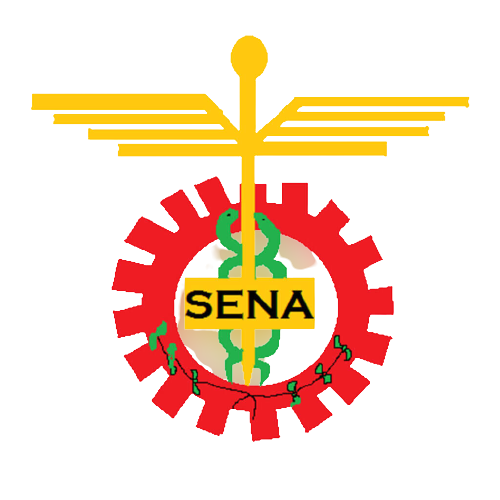

ESCUDO SENA

Representa principalmente los tres sectores económicos del País;
aquella rueda dentada que observamos allí hace referencia al sector industrial
y de construcción, así como el número de salientes significa la cantidad que hay de centros del Sena.
El caduceo refiere al sector de servicios y de comercio,
en ultimo lugar encontramos la rama de caféque nos muestra esa parte del sector primario
y extractivo del País.